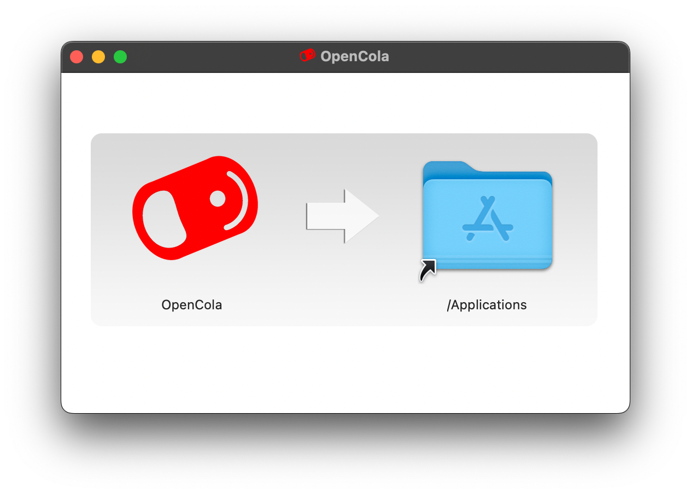
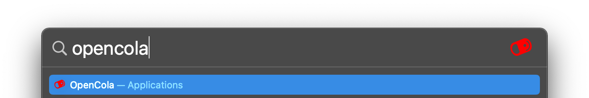
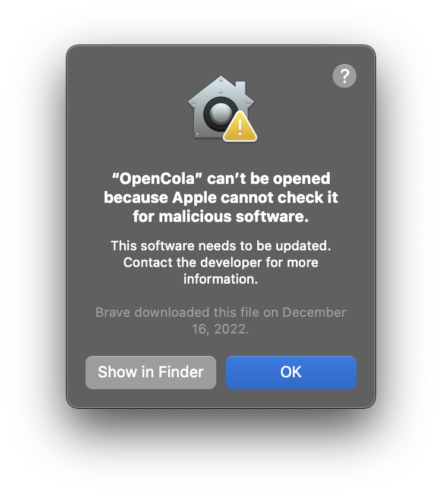
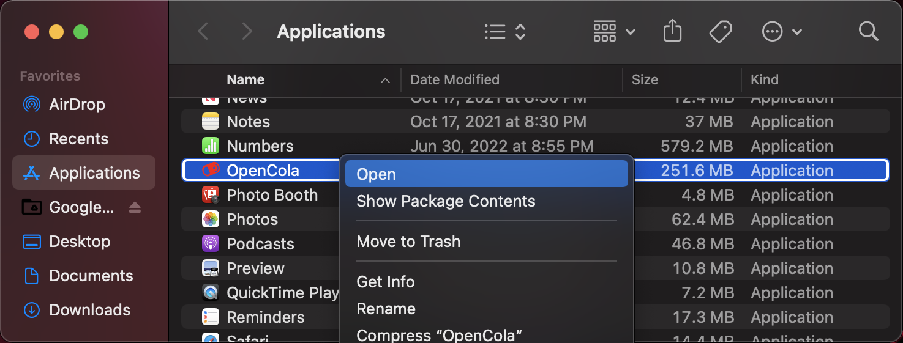
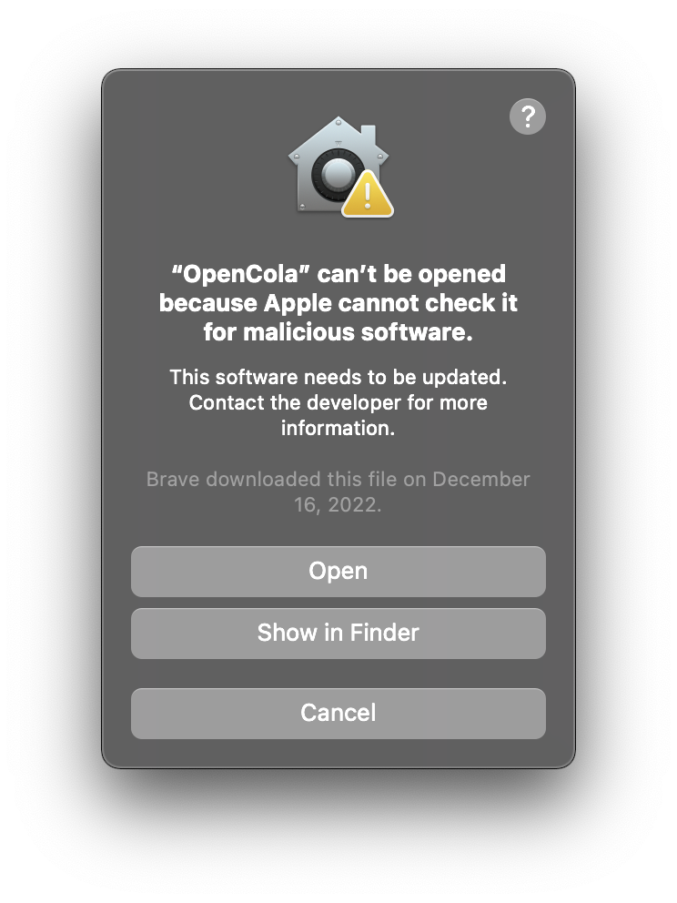

MacOS Installation
1. Download the Mac Release (if the download doesn't automatically start, click the link).
2. Open the disk image: 
3. Click and drag the OpenCola icon and drop in Applications
4. Close the disk image (Command + E)
5. Open OpenCola: (Command + space), type opencola and hit Return 
6. Since the DMG is signed, but not notarized (we'll do this next release), you won't be able to directly open it the first time. Click Show in Finder 
7. Hold Control and Click on OpenCola (or Right-Click on OpenCola) and select Open: 
8. On the resulting dialog, click Open:
9. In a few seconds, a browser window will open. Follow the in app instructions.